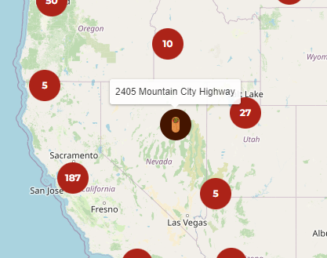
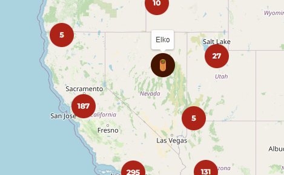
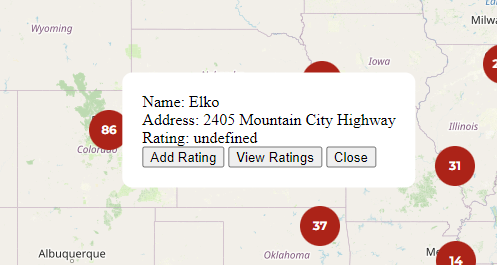

ThirdDevBlogChipotle
Chipotle Social Media Site
Soooooo, I got side tracked a bit today. I noticed that for some of locations the address and name matched exactly. So, I did some digging and found that there are cross streets listed for each location that I could use as a stand-in for the name. However, I soon found out, that not all of the locations had these cross streets. I then thought “well, if there is only one Chipotle in a given city, then I can just use the city name as the name of the Chipotle. Again, there were some cities where there were more than one Chipotle. So, finally, I decided to add in the part of the address to the city separated by a -. This was kind of a lazy solution and I might go back and change it later, but it works well for now.
After I spent all that time on further cleaning the data I finally started on what I wanted to get done for the day: what happens when a user clicks on an individual Chipotle location. I did some research and found that I could use a Modal to overlay the information on top of the map.
I noticed that I could still interact with the map when the Modal was one my screen, so I found a way to prevent that using a overlay, to make all of the clicks and drags interact with that before it can reach the map itself.
This is all I got done today. While small, it is a step in the right direction! Probably won’t get too much done over the weekend, and I leave for Georgia Sunday night so there will be minimal if not no progress until I get back!
Excited to see where I can take this!
Here are some updated screenshots of what the names look like as well as the overlay!
Old:

New:

Overlay + Modal 